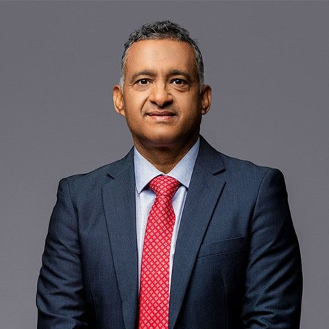
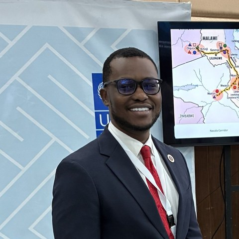

Coordenar
Alinhamos ministérios, governos provinciais e distritais, e parceiros em torno de prioridades comuns.
Unidade Técnica de Implementação
Coordenamos a execução do PEDEC-Nacala, que liga o porto de Nacala ao interior do país, em cinco províncias: Niassa, Cabo Delgado, Nampula, Zambézia e Tete.
Explore o site
Sobre nós
A UTI PEDEC-Nacala é a Unidade Técnica de Implementação do PEDEC-Nacala, uma instituição tutelada pelo Ministério da Planificação e Desenvolvimento. Existe para transformar o plano em projectos concretos: coordena, acompanha e apoia a execução nas cinco províncias do corredor, Niassa, Cabo Delgado, Nampula, Zambézia e Tete.
Trabalhamos com os governos provinciais e distritais, o sector privado, as comunidades e os parceiros de cooperação, para que os investimentos cheguem a quem produz e criem emprego e rendimento locais.
Coordenar e acelerar a implementação do PEDEC-Nacala, transformando o plano em projectos concretos, financiados e acompanhados até aos resultados.
Um Corredor de Nacala integrado, competitivo e inclusivo, onde as cadeias de valor ligam as zonas produtivas dos cinco territórios aos mercados nacionais e internacionais.
O Corredor de Nacala é apontado como um “galvanizador do desenvolvimento da África Austral”.

Um corredor não vale apenas pelo que passa. Vale pelo que fica”

Enquadramento legal
Alinhamos ministérios, governos provinciais e distritais, e parceiros em torno de prioridades comuns.
Apoiamos estudos, desenho técnico e preparação de propostas até ficarem prontas para financiamento.
Medimos o progresso com indicadores claros e publicamos os resultados para decisores e comunidades.
Aproximamos investidores, associações de produtores e instituições de formação das oportunidades do corredor.
PEDEC-Nacala
O Plano Estratégico de Desenvolvimento Económico do Corredor de Nacala define onde investir, em que cadeias de valor e com que parceiros, para gerar crescimento que chegue às comunidades.
Clique numa província para ver os seus números. Filtre por sector para ver onde cada actividade pesa mais.
Mapa esquemático para visualização. Os limites são aproximados e não têm valor cartográfico oficial. As localizações dos projectos marcadas como “ilustrativo” são indicativas, até serem confirmadas pela UTI.
Cada ministério, com as suas áreas de intervenção. Os sectores de actividade coincidem com os ministérios.
Distribuição das áreas por ministério em validação pela UTI.
Os 48 projectos de alta prioridade seguem a matriz oficial do PEDEC-Nacala, organizados por sector. A informação de cada projecto está em actualização pelos respectivos sectores.
Número de projectos de alta prioridade em cada sector, pela ordem da matriz dos 48 projectos.
Em que ponto está cada projecto.
Quem está proposto para executar os projectos.
Um projecto que abrange várias províncias conta em cada uma. Três projectos ficam fora das cinco províncias (Malawi, Zâmbia e Maputo).
Percentagem de execução de cada projecto em execução.
Resumos feitos a partir de notícias públicas, com a fonte indicada. A UTI deve validar antes de divulgar.
Eventos de demonstração, a substituir pela agenda real.
Para informação sobre o PEDEC-Nacala, parcerias e projectos.
Informação geral, a validar pela UTI. Para casos concretos, escreva-nos na secção Contactos.